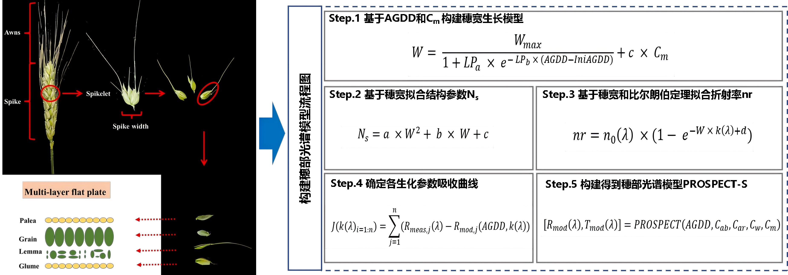
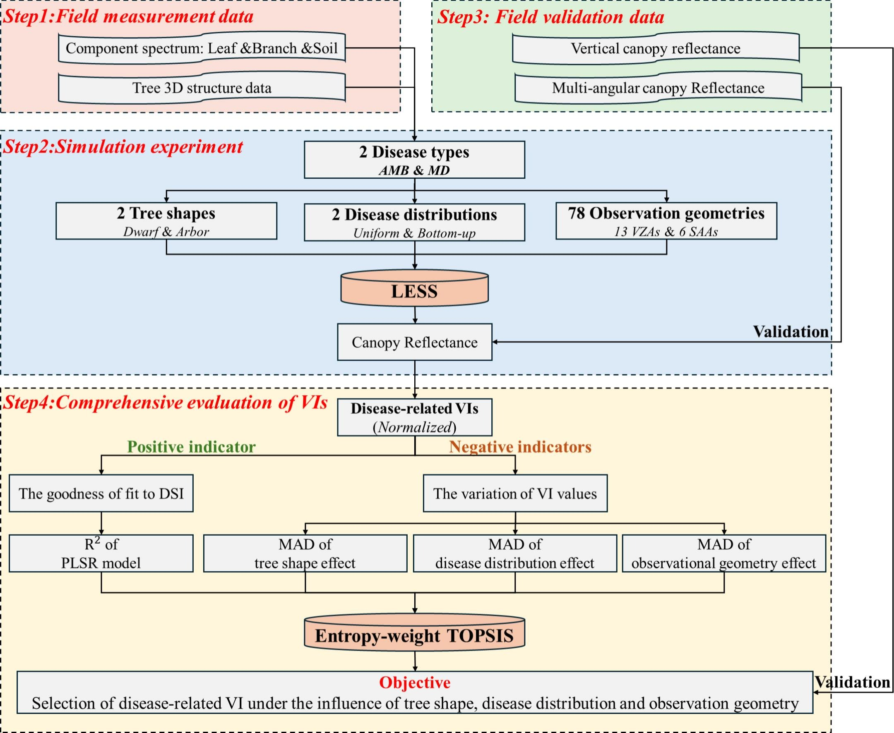
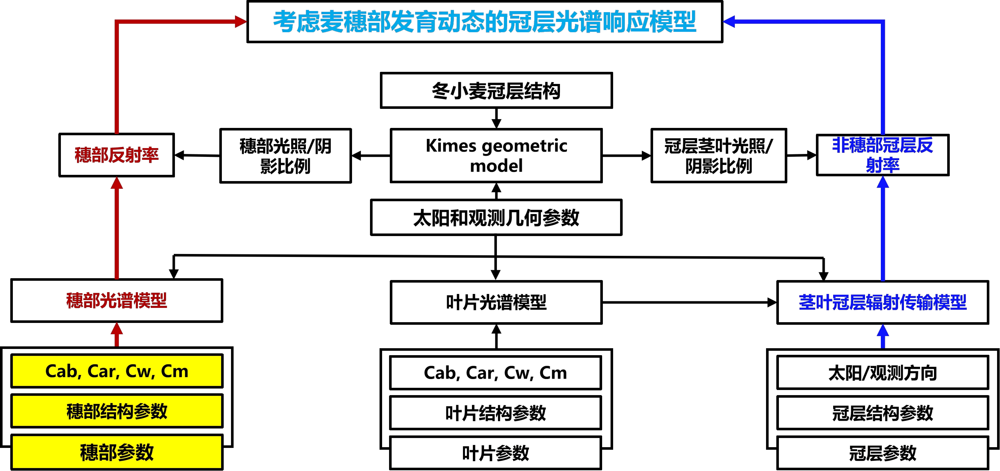
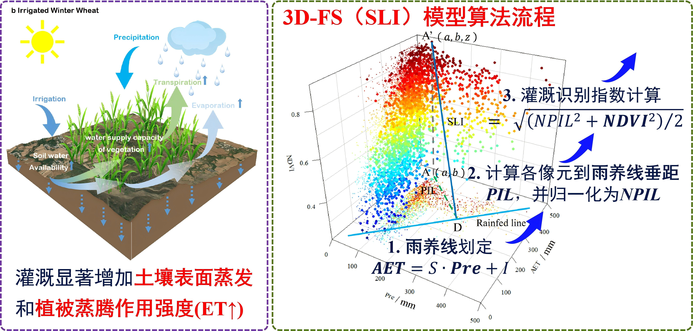
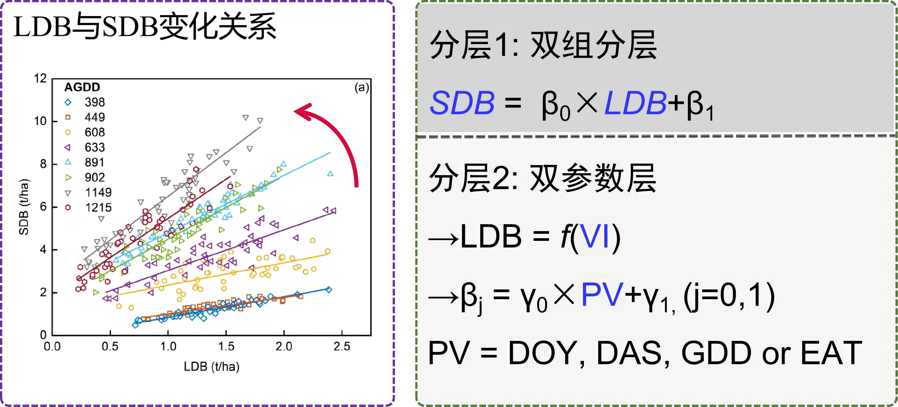
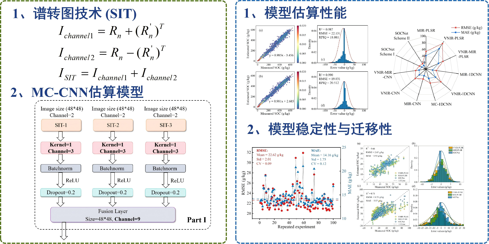
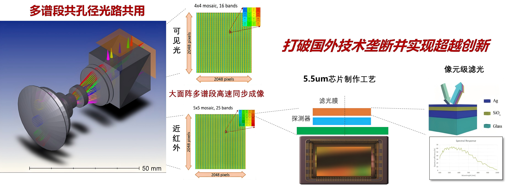
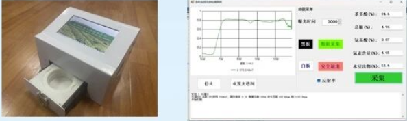
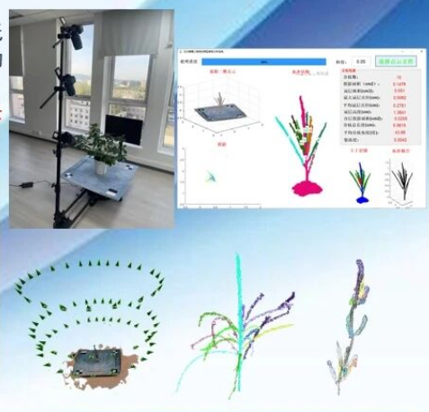

针对麦穗几何结构优化的辐射传输模型。Prospect-S模型通过刻画穗层的非连续分布特征，解决了传统模型在小麦生长后期反射率模拟偏差较大的难题。

点击图片查看全览
基于经典PROSPECT模型改进，将原模型中叶绿素的吸收系数替换为同等的N吸收系数，开发出基于氮的PROSPECT模型， 建立了叶片尺度氮素含量与光谱特征的物理响应机制，支持高精度的叶片氮含量定量反演。

点击图片查看全览
针对冠层结构、病害分布以及观测几何等因素对冠层的光谱响应机制不明朗的问题，提出了一种综合分析策略，结合三维辐射传输模型（3D RTM）和多准则决策方法——基于理想解相似度的排序偏好技术（TOPSIS）的熵权法——基于模拟输出和地面测量， 系统地评估冠层尺度的现有病害相关VIs。 定量评估了树形、病害分布和观测几何对植被指数（VIs）的混杂效应，并从两个关键角度系统排序了40个VIs的性能。 本研究为选择适合特定疾病和植被特征的植被指数提供了一种稳健的方法论框架，提高了基于遥感植物疾病评估的精确性。

点击图片查看全览
针对冬小麦抽穗后，由穗和叶组成的复合冠层结构具有明显的空间异质性，并且这种异质性会随着作物的生长而动态变化的问题， 构建了考虑冬小麦穗部的混合冠层辐射传输模型WELL model.

点击图片查看全览
本研究从“灌溉对水汽循环的调节”和“灌溉对作物生长的促进”两个机制出发，基于降水（P）-蒸散（AET）-植被指数（NDVI）三维特征空间， 首次创新定义了季中田块灌溉识别的新型坡度长度指数（SLI），通过P-AET-NDVI特征空间确定稳健的雨养线位置，实现利用SLI可以直接生成田块尺度灌溉作物图。

点击图片查看全览
本研究本研究旨在利用物候变量（PV）开发一种半机理的茎秆生物量预测模型（PVWheat-SDB），以准确预测不同生长阶段的小麦 SDB。 模型的核心是在遥感冠层植被指数（VIs）约束下利用 PV 预测 SDB。

点击图片查看全览
本研究提出将一维光谱转换成二维图像技术与多通道CNN耦合的深度学习模型，通过融合不同层次的VNIR和MIR光谱特征实现土壤有机碳的准确估算， 并通过迁移学习实现跨数据集的SOC快速估算。

点击图片查看全览
新型视频高光谱与点云"图-谱合一"传感器(iSpectrum5DH41)， 将高光谱采集与三维点云测量融为一体，实现了田间作物空间三维、光谱维、时间维的五维实时同步感知，轻便敏捷，适合轻小型无人机及地面移动平台搭载使用。 iSpectrum5DH41适合地面、机载和车载等多种平台使用，数据采集软件实现高光谱和激光雷达数据的同步获取，配套点云和高光谱处理软件高效实现数据的解算和拼接融合。

点击图片查看全览
创制了稻麦养分光谱诊断仪-CropSense,检测精度达87.4%，推广600多套，累计采集稻麦长势养分数据15万条;首创400线衍射光栅微型光谱仪， 无人机高光谱养分解析精度达85%以上;构建了基于SaaS云服务的作物长势、病虫害、干旱、估产等智能决策服务关键技术。

点击图片查看全览
在线式茶叶品质光谱检测仪是一款基于主动光源的便携式高光谱茶鲜叶品质检测设备，利用了近5年一千余条茶叶真实化验数据构建分析模型， 实现茶鲜叶主要品质指标的高精度实时检测

点击图片查看全览
针对作物器官尺度三维精细表型测量难度大效率低的问题， 研发了一套基于数码相机的作物三维点云自动数据采集及分析平台， 快速构建三维点云并提取株高、叶面积、体积以及具有分支结构作物的分支数、分支长度、分支角度等关键表型参数信息。

点击图片查看全览


农业农村部农业遥感机理与定量遥感重点实验室©2025 版权所有
地 址：北京市海淀区曙光花园中路11号北京农科大厦A座